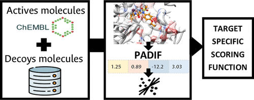
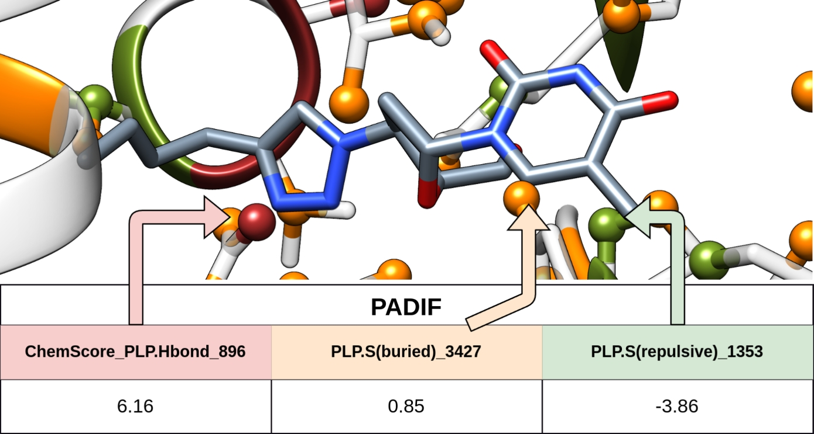

Felipe
Victoria-Muñoz
Computational chemist and cheminformatics researcher focused on accelerating drug discovery through machine learning, virtual screening, and molecular modelling. PhD Magna Cum Laude in Medicinal Chemistry & CADD from the University of Münster (Germany). Passionate about developing open, reproducible workflows at the intersection of chemistry, data science, and biology.
Teaching Assistant current
Fundación Universitaria Salesiana · Bogotá
PhD Fellow
Institute of Pharmaceutical and Medicinal Chemistry, University of Münster · Germany
With Prof. Dr. O. Koch. DFG-funded research on ligand selectivity, target-specific scoring functions, and fragment-based design.
Research Assistant
National University of Colombia – FPIT · Bogotá
Cheminformatic analysis of quorum sensing inhibitors in P. aeruginosa.
Technological Transfer Analyst
Tecnoquímicas S.A. · Colombia
PhD Medicinal Chemistry & Computational Drug Discovery Magna Cum Laude
University of Münster · Germany
Advisor: Prof. Dr. Oliver Koch
MSc Pharmaceutical Science
National University of Colombia · Bogotá
Advisor: Dr. Fabian Lopez-Vallejo
BS Pharmaceutical Chemistry
National University of Colombia · Bogotá
Advisor: Dr. Mary Trujillo Gonzales
Organizer & Lecturer — Data Science for Drug Discovery
Pharmacy Department · National University of Colombia · Bogotá
Teaching Fellow — Computational Drug Discovery / Medicinal Chemistry / Toxicology
Fundación Universitaria Salesiana · Bogotá
Organizer & Lecturer — 2nd International Summer School AI4MedChem
University of Münster · Germany
Committee Member — MICAI
Mexican International Conference on Artificial Intelligence · Mérida, Mexico
Teaching Fellow — Medicinal Chemistry / Introduction to Pharmacy
University in Applied and Environmental Sciences · Bogotá
Teaching Assistant — Phytochemistry
National University of Colombia · Bogotá
"Analysis of the selectivity and promiscuity of ligand binding for fragment-based design"
PI: Prof. Dr. O. Koch · University of Münster
Funder: Deutsche Forschungsgemeinschaft (DFG)
"Cacao On Capable Options for Common Agriculture Problems (COCOA)"
PI: Dr. C. Sierra · National University of Colombia
Funders: CLIMA/IE Colombia · Grupo Energía de Bogotá · Fundación Santo Domingo · USDA
"Chemoinformatic analysis of active molecules against QS transcription factors in P. aeruginosa"
PI: Dr. F. Lopez-Vallejo · National University of Colombia
Funders: FPIT · National University of Colombia · Minciencias
Bold = D.F. Victoria-Muñoz (lead / corresponding author)
Translational toxicology: toxins as templates for pesticide design and targeted therapies
COLAMA 2026 · San José, Costa Rica — Invited
SMARTDock: a toolkit for target-specific scoring functions using bioactivity data
V International Symposium on Computational Molecular Sciences · Bogotá
Optimizing docking with target-specific scoring functions: an end-to-end workflow
S-DISCO Days 2025 · Gdańsk, Poland — Invited
Target-specific scoring functions
Seminario Institucional INDICASAT-AIP · Panamá — Invited
Beyond the active: integrating decoys in ML models, PADIF case
ACS Fall 2024 · Denver, Colorado
ML-based scoring functions: reasonable decoy selection for docking-based model creation
18th German Conference on Cheminformatics (GCC 2024) · Bad Soden, Germany
Decoy selection in bioactivity classification models: exploring PADIF
7th RSC-CICAG/RSC-BMCS AI in Chemistry · Cambridge, UK
ML-based scoring functions: decoy selection in bioactivity classification models
24th European Symposium on QSAR · Barcelona, Spain
Natural volatile compounds as possible insecticides
ACS Fall 2023 · Virtual
Key amino acid residues for agonist or antagonist activity against PqsR from P. aeruginosa
ACS Spring 2021 · Virtual
Cheminformatics analysis on QS transcription factor molecular datasets in P. aeruginosa
EFMC-ISMC and EFMC-YMCS 2020 · Virtual
Cheminformatics analysis of agonist and antagonist of LasR, PqsR and RhlR in P. aeruginosa
XXII Latin-American Meeting on Pharmacology · Cali, Colombia

